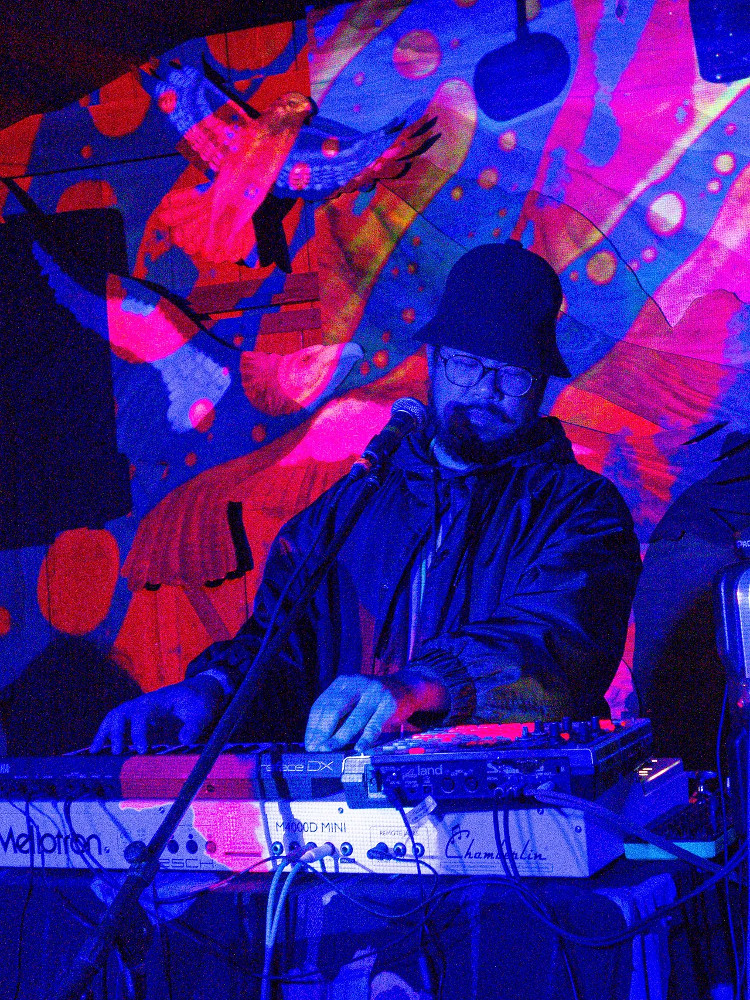

About the artist
I'm Mario Preciado, a Bay Area based photographer.
My photography consists of live music, street, fashion, portraiture, art culture and community. My focus is expressing the style and vibrant colors that I believe help reflect the atmosphere of these subjects and events.
I look forward to working with you.
Selected Work
Get in Touch
Available for bookings in the Bay Area and beyond. Let's capture your next event.
Send Message